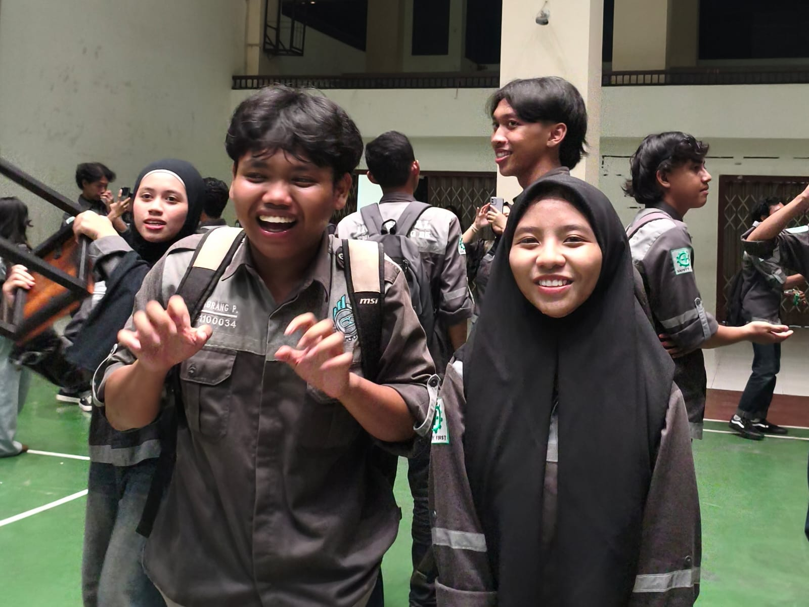

✦ Ketuk untuk membuka kenangan
Galeri
Kepoin Yuk 😮
Terbagi Dalam Waktu
BARASUARA
Koleksi
Album Kenangan 🤏
Geser untuk berpindah
Penutup
Terima Kasih 😵💫
Pesan Terakhir

✦ Ketuk untuk melihat pesan terakhir